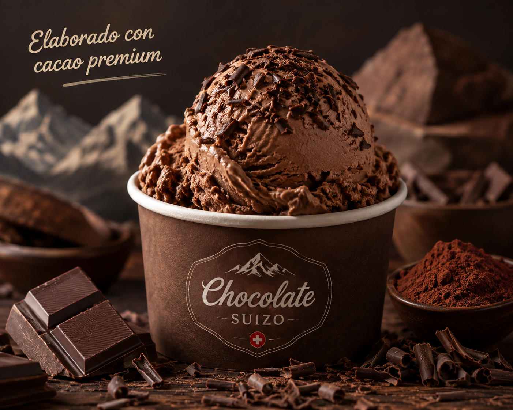
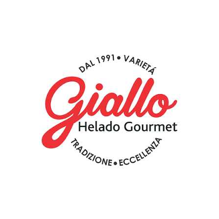
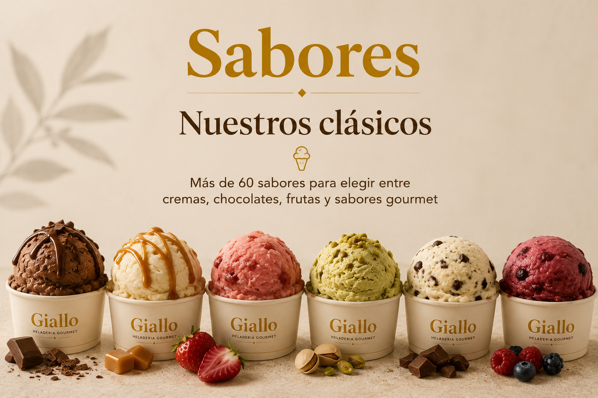
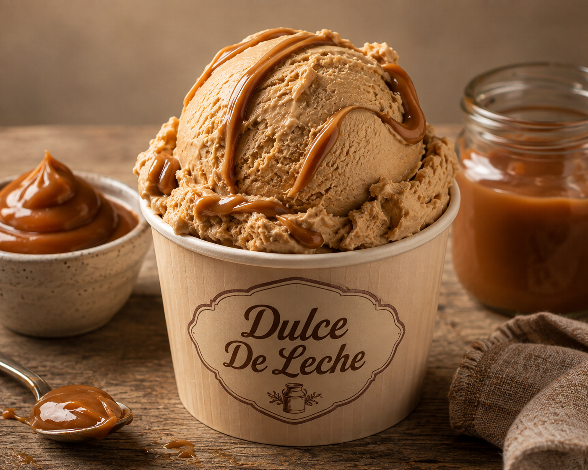
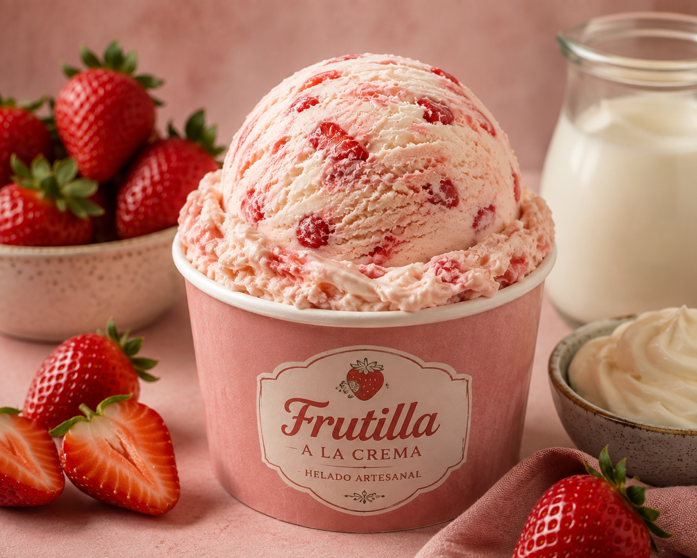

Chocolate suizo
Elaborado con cacao premiun

Más de 60 sabores para elegir entre cremas, chocolates, frutas y sabores gourmet


Elaborado con cacao premiun

Uno de los sabores favoritos de nuestros clientes

Frutillas seleccionadas con una suave crema artesanal